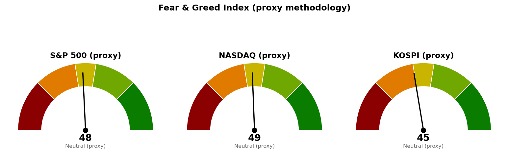

미국 지수·섹터·금리·변동성지수는 9월 14일(월) 뉴욕 정규장 개장 2시간 시점의 장중 수치이며 종가가 아닙니다. 코스피와 니케이 225는 9월 14일 종가이되, 종가가 제공되지 않아 같은 날 시간별 거래 자료의 마지막 체결가로 채운 값이라 확정 종가와 다를 수 있습니다. 브렌트유·WTI는 9월 14일자 선물 시세입니다.
직전 브리핑은 9월 14일 한국시간 12시 기준으로 썼고, 지금은 그 뒤에 나온 코스피 마감과 진행 중인 뉴욕 정규장으로 채점합니다.
| 직전에 건 조건 | 판정 | 근거 |
|---|---|---|
| S&P 500 종가로 7,668 회복 그리고 30년 금리 5.286% 아래 → 경고 해제 | 미충족(진행 중) | 장중 7,609로 조건선 59포인트 아래. 30년 금리도 5.351%로 조건선보다 0.065%포인트 높습니다. 정규장 마감은 한국시간 오늘 05:00입니다 |
| S&P 500이 7,580 아래에서 정규장 마감 → 보유분 축소 검토 | 미충족(진행 중) | 장중 저가 7,592로 조건선 위에서 버티고 있습니다. 장중 이탈만으로는 판정하지 않습니다 |
| S&P 500이 기준선을 못 지키면 내려갈 다음 지지 7,599 | 닿았습니다 | 장중 저가 7,592로 이 가격 아래까지 내려갔다가 7,609로 올라온 상태입니다. 직전이 적은 "58포인트 아래"는 실제로 건드려졌습니다 |
| 나스닥 사다리 1차 25,998 도달 | 충족 | 9월 14일 장중 저가 25,993으로 닿았습니다. 다만 집행 조건인 "9월 17일 이후 도달분"은 채우지 못했습니다 |
| 코스피 사다리 1차 6,662 도달 | 도달했으나 종가는 위 | 9월 14일 장중 저가 6,655로 닿았고 종가는 6,678로 그 위에서 마쳤습니다 |
| 코스피·나스닥 사다리 취소선(6,024 / 25,526) | 미충족 | 두 지수 모두 취소선에서 각각 654포인트(하루 평균 변동폭의 2.38배), 611포인트(1.99배) 위입니다 |
| 브렌트유가 107.63달러 위로 복귀 → 9월 11일 상승의 전제 소멸 | 충족 | 108.34달러로 조건선 위에서 마쳤습니다 |
직전 브리핑이 장중 수치로 적었던 값 두 개를 정정합니다. 코스피 9월 14일은 장중 -2.22%로 적었으나 마감까지 더 밀려 -3.36%(6,678)로 끝났습니다. 니케이 225는 장중 -0.80%였으나 -0.59%(63,634)로 마쳤습니다. 방향은 맞았고 폭이 달랐습니다.
직전 계획은 살아 있습니다. 경고 해제 조건도 악화 조건도 종가로 충족되지 않았으므로 S&P 500 기준선 7,668과 축소 검토선 7,580, 코스피 기준선 6,815, 나스닥 기준선 26,271을 그대로 둡니다. 20일선 자체는 세 지수 모두 조금씩 내려왔지만(S&P 500 7,667 → 7,661, 나스닥 26,277 → 26,264, 코스피 6,815 → 6,808) 이 정도 이동으로 기준선을 다시 그리면 매일 다른 숫자가 나오게 되므로 옮기지 않습니다.
한 칸만 옮깁니다 — 나스닥의 "못 지키면" 가격입니다. 직전이 적은 25,998에 오늘 저가가 닿았으므로 그 아래 다음 지지 25,888로 내려 적습니다. 조건이 충족돼서 움직인 것이며, 나머지 가격은 직전과 같습니다.
| 줄 | 내용 |
|---|---|
| 현재 위치 | 6,678 (9/14 종가, -3.36%). 20일선(최근 20일 평균 가격선이되 최근 가격에 더 무게를 두는 지수이동평균) 6,808보다 130포인트(하루 평균 변동폭의 0.47배) 아래, 50일선 6,898보다 220포인트(0.80배) 아래. 상대강도지수(최근 14일 동안 오른 폭과 내린 폭의 비율을 0~100으로 나타낸 값) 46.7 |
| 기준선 | 6,815 (20일선, 직전 그대로) — 일봉 종가로 위에서 마쳐야 인정합니다. 장중에 넘는 것은 판정이 아닙니다 |
| 지키면 | 7,025. 5월 20일부터 9월 10일까지 6회 반응하며 지지에서 저항으로 역할이 바뀐 가격대이고, 4거래일 전에도 반응했습니다. 현재가에서 347포인트(1.27배) 위입니다 |
| 못 지키면 | 6,662. 3월 31일 저점에서 6월 19일 고점까지 상승분의 61.8%를 반납하는 자리(6,702)와 주봉 38.2% 되돌림, 6,600 단위 가격이 겹칩니다. 현재가에서 15포인트(0.06배) 아래이고, 9월 14일 저가 6,655로 이미 이 구간 안에 들어갔다 올라왔습니다 |
| 매수 사다리 | 1차 6,662 계좌의 5%, 2차 6,409 계좌의 5%. 취소선 6,024(40일 박스 하단) — 일봉 종가로 잃으면 남은 회차를 집행하지 않습니다 |
| 예상 기간 | 기준선까지 0.50일치 변동폭, 도착지 7,025까지 1.27일치입니다. 되돌림 없이 한 방향으로 갈 때의 최단이 2 거래일이며, 그 이상은 근거를 댈 수 없어 상한을 적지 않습니다 |
2차 6,409는 2월 27일부터 9월 3일까지 5회 반응하며 저항에서 지지로 바뀐 가격대이고 9월 3일 저점 6,439가 그 위에 붙어 있습니다. 취소선까지 전부 물리면 1차는 -9.58%, 2차는 -6.00%가 되어 계좌 대비 -0.78% 손실입니다. 직전과 같은 숫자입니다.
40일 박스는 6,024~7,128이고 박스 안쪽은 매집 우위로 판정됩니다 — 지지 테스트마다 매도 거래량이 줄었고 저점이 절상됐습니다. 다만 직전 40일 구간(7,738~9,160)에서 아래로 내려와 이 박스에 들어온 상태라, 매물을 소화하고 올라가는 국면인지 한 번 더 내려가기 전의 쉬어 가는 국면인지는 아직 갈리지 않았습니다.
코스피 계획은 미국장 결과에 선행 종속됩니다. 코스피는 20일선 아래에서 -3.36%로 마쳤고, 나스닥·S&P 500도 지금 20일선 아래에서 내리고 있어 세 기준선이 같은 방향을 가리킵니다. 오늘 밤 FOMC를 앞둔 뉴욕 세션 결과가 내일 코스피 시가를 좌우하므로, 코스피 단독 신호만으로 사다리를 앞당기지 마십시오.
| 줄 | 내용 |
|---|---|
| 현재 위치 | 26,138 (9/14 장중, -0.74%, 고가 26,155 · 저가 25,993). 20일선 26,264보다 127포인트(하루 평균 변동폭의 0.41배) 아래, 50일선 26,090보다 48포인트(0.16배) 위. 상대강도지수 48.2 |
| 기준선 | 26,271 (직전 그대로) — 20일선 26,264와 5월 11일부터 9월 11일까지 8회 반응한 가격대(26,289), 26,200 단위 가격이 겹치는 자리입니다. 일봉 종가로 위에서 마쳐야 유지로 봅니다 |
| 지키면 | 26,680. 8월 5일 고점 26,739와 26,600 단위 가격이 겹칩니다. 현재가에서 542포인트(1.77배) 위이고, 그 위는 26,821과 90일 박스 상단 26,951입니다 |
| 못 지키면 | 25,888. 8월 24일 저점 25,911, 5월 7일부터 9월 14일까지 7회 반응한 가격대, 25,800 단위 가격이 겹칩니다. 현재가에서 250포인트(0.81배) 아래입니다. 직전이 적은 25,998은 오늘 저가가 닿아 이미 시험받았습니다 |
| 매수 사다리 | 1차 25,998 계좌의 5%, 2차 25,855 계좌의 5%. 취소선 25,526(7월 8일 저점) — 일봉 종가로 잃으면 남은 회차를 집행하지 않습니다 |
| 예상 기간 | 기준선까지 0.43일치, 도착지까지 1.77일치, 다음 지지까지 0.81일치 변동폭입니다. 어느 쪽이든 되돌림 없이 진행할 때의 최단이 1~2 거래일입니다 |
취소선까지 전부 물리면 1차는 -1.81%, 2차는 -1.27%가 되어 계좌 대비 -0.15% 손실입니다. 코스피 사다리보다 손실이 작은 것은 취소선이 회차 가격에 가깝기 때문이며, 그만큼 취소선에 닿기도 쉽습니다.
90일 박스는 24,807~26,951이고, 박스 안에서 저점이 낮아지고 있어 매집·분산 어느 쪽 우위도 판정되지 않았습니다. 사다리 1차 가격은 오늘 이미 닿았으나 9월 16일 FOMC 결과 확인 전에는 집행하지 않습니다 — 직전 브리핑이 건 조건 그대로이며, 금리 인상 전망이 새로 올라온 지금 그 조건을 느슨하게 할 이유가 없습니다.
| 줄 | 내용 |
|---|---|
| 현재 위치 | 7,609 (9/14 장중, -0.63%, 고가 7,624 · 저가 7,592). 20일선 7,661보다 52포인트(하루 평균 변동폭의 0.84배) 아래, 50일선 7,603보다 6포인트(0.09배) 위. 상대강도지수 46.0 |
| 기준선 | 7,668 — 직전 브리핑이 건 값을 그대로 씁니다. 정규장 종가로 위에서 마쳐야 하며, 장중에 넘는 것은 판정이 아닙니다 |
| 지키면 | 7,801. 8월 5일 고점 7,794와 8월 13일 고점 7,817, 90일 박스 상단 7,794, 7,800 단위 가격이 겹칩니다. 현재가에서 193포인트(3.08배) 위입니다 |
| 못 지키면 | 7,599. 50일선 7,603과 9월 1일 저점 7,611, 7월 15일 고점 7,582가 겹칩니다. 현재가에서 10포인트(0.16배) 아래이며, 그 아래 7,580이 보유분 축소 검토선이고 다음 겹침 구간은 7,565입니다 |
| 매수 사다리 | 이번 브리핑도 S&P 500에는 매수 사다리를 내지 않습니다. 아래 설명 참조 |
| 예상 기간 | 기준선까지 0.95일치, 도착지까지 3.08일치, 다음 지지까지 0.16일치 변동폭입니다 |
사다리를 내지 않는 이유는 직전과 같습니다. 아래쪽 첫 지지 겹침 구간 7,599와 보유분 축소 검토선 7,580 사이가 19포인트, 하루 평균 변동폭의 0.30배뿐이라 1차를 사는 가격과 보유분을 줄이라는 신호가 같은 구간에 들어갑니다. 그 아래 7,565(5월 28일~9월 10일 5회 반응, 7,550 단위 가격)까지 내려가야 다음 자리가 나오는데 거기까지 가려면 7,580을 이미 종가로 잃은 뒤입니다. S&P 500 노출은 나스닥 사다리로 갈음하십시오.
50일선 7,603은 현재가 아래 6포인트에 있습니다. 오늘 정규장에서 이 선과 7,599를 함께 잃고 마치면 다음 판정선은 7,580입니다.
세 지수 모두 9월 16일 FOMC 결과를 확인하기 전에는 어떤 회차도 집행하지 않습니다. 나스닥 1차는 9월 14일 장중 저가로, 코스피 1차는 같은 날 장중 저가로 이미 가격에 닿았으나 두 건 다 FOMC 이전이므로 집행 대상이 아니며, 9월 17일 이후 다시 그 가격에 닿을 때부터 유효합니다. 두 사다리를 모두 채우고 취소선까지 전부 물리면 계좌 대비 합계 -0.93%입니다.
| 지수 | 종가/현재 | 등락 | 고가 | 저가 |
|---|---|---|---|---|
| S&P 500 (9/14 장중) | 7,609 | -0.63% | 7,624 | 7,592 |
| 나스닥 종합 (9/14 장중) | 26,138 | -0.74% | 26,155 | 25,993 |
| 코스피 (9/14 종가) | 6,678 | -3.36% | 6,774 | 6,655 |
| 니케이 225 (9/14 종가) | 63,634 | -0.59% | 63,692 | 62,726 |
미국 두 지수는 개장 직후 저가를 찍고 올라온 상태입니다. 나스닥 저가 25,993은 직전 브리핑이 다음 지지로 적어 둔 25,998 바로 아래이고, S&P 500 저가 7,592는 다음 지지 7,599 아래·축소 검토선 7,580 위입니다. 두 지수 모두 아래쪽 지지 구간을 장중에 시험한 뒤 되돌려 놓은 상태이며, 확정은 한국시간 05:00 마감입니다.
코스피는 9월 14일 -3.36%로 마쳐 20일선 아래로 더 내려왔습니다. 시가 6,693이 전일 종가보다 217포인트 낮았고, 저가 6,655에서 올라와 6,678로 끝냈습니다.
미국 섹터를 20일 초과수익(SPDR 업종 ETF의 지수 대비 초과 성과)으로 줄 세운 결과입니다. 하루치 등락률이 아니라 이 값이 주도섹터 판정 기준입니다.
| 주도 (20일 초과) | 20일 | 5일 | 1일 | 부진 (20일 초과) | 20일 | 1일 | |
|---|---|---|---|---|---|---|---|
| 에너지 (XLE) | +7.55% | +3.17% | +0.68% | 산업재 (XLI) | -7.02% | -1.23% | |
| 커뮤니케이션 (XLC) | +3.41% | +3.39% | +2.08% | 유틸리티 (XLU) | -3.21% | -0.57% | |
| 헬스케어 (XLV) | +2.29% | -0.94% | +1.87% | 임의소비재 (XLY) | -2.57% | +0.20% |
에너지가 20일 초과수익 +7.55%로 1위이고, 브렌트유가 108.34달러까지 올라온 것과 같은 방향입니다. 기술(XLK)은 20일 초과 -0.80%, 하루치 -1.82%로 지수 아래에 있어 이번 하락 구간에서 앞장서 밀리는 쪽입니다. 오늘 하루치만 보면 커뮤니케이션 +1.46%, 헬스케어 +1.26%, 필수소비재 +1.23%가 오르고 산업재 -1.84%, 기술 -1.82%가 내려, 방어 성격 업종이 오르고 경기·성장 업종이 내리는 배열입니다.
한국 섹터는 테마형 ETF 기준이라 미국 업종 ETF와 성격이 다릅니다. 20일 초과수익 상위는 은행 +10.61%, 건설 +10.38%, 2차전지 +2.18%, 반도체 +2.12%이고, 하위는 자동차 -12.39%, 헬스케어 -8.65%, 인터넷 -7.26%입니다. 코스피가 -3.36%로 밀린 날에도 은행은 하루치로 지수를 +5.71%포인트 앞섰습니다.
| 항목 | 최근값 | 직전 | 등락 | 기준 시점 |
|---|---|---|---|---|
| 미 10년 국채 금리 | 4.979% | 4.975% | +0.08% | 9/14 장중 |
| 미 30년 국채 금리 | 5.351% | 5.354% | -0.06% | 9/14 장중 |
| 브렌트유 | 108.34달러 | 104.61달러 | +3.57% | 9/14 선물 |
| WTI | 103.52달러 | 100.05달러 | +3.47% | 9/14 선물 |
| 변동성지수 (VIX) | 17.37 | 15.84 | +9.66% | 9/14 장중 |
10년 금리 4.979%는 5.000%까지 0.021%포인트를 남긴 값이고, CNBC는 오늘 장중 5%에 닿았다고 보도했습니다(우리 쪽 시세로 확인된 값은 4.979%입니다). 30년은 5.351%로 경고 해제 조건선 5.286%보다 0.065%포인트 높아, 직전 브리핑 때의 0.068%포인트에서 거의 줄지 않았습니다.
유가와 브렌트유 등락률의 비교 기준은 직전 브리핑이 쓴 것과 같은 104.61달러이므로 두 세션분을 합친 값입니다. 브렌트유 108.34달러는 직전이 "여기로 복귀하면 9월 11일 상승의 전제가 사라진다"고 적은 107.63달러 위이며, 그 조건은 충족됐습니다.
변동성지수는 15.84에서 17.37로 +9.66% 올랐습니다. 직전 브리핑이 "금리가 오르는 가운데 나온 변동성 축소라 FOMC 결과에 되돌려질 여지가 있다"고 적은 부분이 하루 만에 되돌려진 방향으로 움직였습니다.
1. 10년 국채 금리가 2023년 이후 처음 5%에 도달 (CNBC, 9월 14일) 이번 주 연준 결정을 앞두고 10년 금리가 여러 해 만의 고점까지 올랐다는 내용입니다. 우리 쪽 시세는 장중 4.979%이며, 이 수치가 이번 브리핑이 경고를 유지하는 직접적인 근거입니다. 금리가 여기서 더 올라가면 S&P 500 기준선 7,668 회복은 그만큼 멀어집니다.
2. 이코노미스트 설문 — 수요일 금리 인상이 유력, 추가 인상도 예상 (로이터, 9월 14일) 직전 브리핑까지는 FOMC를 "금리 방향이 확인되는 자리"로 다뤘는데, 시장 예상이 인상 쪽으로 기울었습니다. 워시 의장 체제의 첫 인상이 될 것이라는 보도가 함께 나왔습니다. 인상이 현실화되면 경고 해제 조건인 30년 금리 5.286% 아래 진입은 더 어려워집니다. 사다리 회차를 FOMC 이후로 미뤄 둔 직전 계획을 이번에도 그대로 둡니다.
3. 유가가 100달러 위에서 더 오르는 중 — 미·이란 긴장 (CNBC, 9월 14일) 브렌트유 108.34달러(+3.57%)·WTI 103.52달러(+3.47%)로, 에너지 섹터의 20일 초과수익 +7.55% 1위와 같은 사건입니다. 유가가 물가를 통해 장기금리를 다시 밀어 올리는 경로가 살아 있는 동안에는 30년 금리 5.286% 조건이 채워지기 어렵습니다.
뉴스 수집 과정에서 MarketWatch 두 개 피드는 응답이 없어 이번 선별에서 빠졌습니다.
| 지수 | 점수 | 구간 | 직전(9/14) |
|---|---|---|---|
| S&P 500 | 48.5 | 중립 | 62.3 |
| 나스닥 | 48.8 | 중립 | 62.7 |
| 코스피 | 44.8 | 중립 | 31.7 |

미국 두 지수의 네 항목은 모멘텀 62.0·61.2, 상대강도 46.0·48.2, 변동성 37.7, 안전자산 선호 45.0·45.4입니다. 모멘텀만 홀로 높고 나머지 셋은 중립 아래라, 이 점수를 상승 근거로 쓰지 마십시오.
코스피는 모멘텀 47.5, 상대강도 52.2, 변동성 17.0, 안전자산 선호 63.4입니다. 변동성 항목 17.0은 20일 실현변동성 43.0%가 과거 3년 중 상위에 해당한다는 뜻이며, -3.36% 마감과 같은 내용입니다.
| 날짜 (한국시간) | 이벤트 | 확인할 것 |
|---|---|---|
| 9월 15일 05:00 | 뉴욕 정규장 마감 (미국 9/14) | S&P 500이 7,580 아래에서 마치는지, 7,599와 50일선 7,603을 지키는지 |
| 9월 15일 15:30 | 코스피 마감 | 6,662를 종가로 지키는지, 6,815를 회복하는지 |
| 9월 16일 (현지) | FOMC 금리 결정 — 결과는 한국시간 9월 17일 새벽 | 인상 여부와 30년 금리가 5.286% 아래로 오는지 |
| 9월 17일 | 주간 신규 실업수당 청구 | 고용 둔화가 금리 부담을 상쇄하는지 |
장부에 기록된 보유는 15개 종목이고, 관심종목은 Bloom Energy (BE) 하나입니다(미보유, 이번 점검에서 조치 없음).
1. 신규 위험자산 편입 중단을 유지합니다. 경고 해제 조건 두 개 중 어느 것도 충족되지 않았고, 금리 인상 전망이 새로 올라왔습니다. 현재가 부근에서 지수든 종목이든 새로 담지 마십시오. 2. 장중 저가로 이미 확정된 손절 두 건은 집행합니다. USA Rare Earth (USAR)는 집행 손절 15.33달러에 저가 15.25달러로 닿았고(보유 30주·평단 17.88달러·평단 대비 -14.3%, -76.64달러), GE Vernova (GEV)는 집행 손절 880.14달러에 저가 868.25달러로 닿았습니다(보유 1주·평단 1,009.58달러·평단 대비 -12.8%, -129.44달러). 저가 도달은 종가를 기다릴 필요가 없는 판정입니다. 3. 종가로 판정할 세 건은 오늘 05:00 마감 이후에 집행하십시오. LightPath (LPTH)는 폐기선 9.38달러 대비 현재 9.21달러, Fluence Energy (FLNC)는 폐기선 9.95달러 대비 9.49달러, Netflix (NFLX)는 회복선 78.19달러 대비 80.32달러입니다. 지금은 장중 수치이므로 이탈·회복 어느 쪽도 확정이 아닙니다. 마감 후 LPTH·FLNC가 그대로면 보유분 정리, NFLX가 그대로면 보유 유지이며 추가 진입 여부만 따로 판단합니다. 4. 매수 쪽 — 이번 브리핑에서 새로 살 자리는 없습니다. 나스닥 1차 25,998과 코스피 1차 6,662 모두 가격에는 닿았으나 FOMC 이전이라 집행 대상이 아닙니다. 9월 17일 이후 다시 닿을 때부터 각각 계좌의 5%로 유효하며, 취소선은 25,526과 6,024입니다. 모두 일봉 종가로 판정합니다. 5. SK하이닉스 (000660.KS)는 계획과 집행이 벌어져 있습니다. 직전 브리핑이 "9월 14일 장중 저가 1,695,000원으로 리포트의 되돌림 진입 가격 1,707,740원에 닿았으므로 이 한 건은 집행한다"고 적었는데, 장부에는 추가 매수 기록이 들어오지 않았습니다(현재 기록은 2주·평단 2,132,667원). 매수하셨다면 봇에 수량·단가·날짜를 보내 주십시오. 기록이 없으면 다음 점검도 2주 기준으로 판정합니다. 6. 분석한 적 없는 7개는 이번에도 판정 불가입니다. 삼성물산 (028260.KS)·SOL AI반도체TOP2플러스 (0167A0.KS)·TIGER 코리아AI전력기기TOP3플러스 (0117V0.KS)·SOL 반도체전공정 (475300.KS)·TIGER 미국배당다우존스 (458730.KS)·Alibaba (BABA)·MP Materials (MP)에는 등록된 기준 가격이 없어 손절선도 목표도 없습니다. 리포트가 나오기 전까지 추가 매수도 정리도 하지 마십시오. 7. 한국 보유종목 셋은 기준 가격 바로 앞에 있습니다. 삼성전자 (005930.KS)와 SK하이닉스 (000660.KS)는 집행 손절까지 하루 평균 변동폭의 0.18배, LS ELECTRIC (010120.KS)은 경고 단계 이탈선까지 0.36배가 남았습니다. 오늘 밤 뉴욕 세션 결과에 따라 내일 코스피 개장에서 판정이 날 수 있으므로 각 종목 리포트가 정한 조치를 그대로 따르십시오.
다음 세션에 볼 것 하나 — 한국시간 05:00 뉴욕 마감에서 S&P 500이 7,580 위에서 마치는지입니다. 지키면 경고 단계가 유지되고, 잃으면 보유분 축소 검토로 한 단계 올라가며 다음 받칠 가격은 7,565입니다.
이 문서는 참고 정보이며 투자자문이 아닙니다. 모든 수치는 위에 적은 기준 시각의 시장 자료에서 가져온 것이고, 투자 판단과 그 결과에 대한 책임은 투자자 본인에게 있습니다.